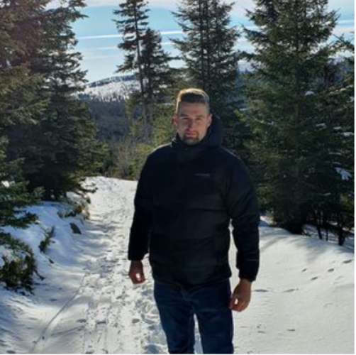

Radu Cristian-Florin

Summary
I am an ambitious person, hardworking, curious, with expertise in Public Administration,
oriented in finding solution for diffrent king of problems.
Education
- 2018-2021, Bachelor Degree in Environmental Management and Audit;
at Babes-Bolyai University Cluj-Napoca;
- 2016-2018, Master Degree in Environmental Protection and Management;
at Babes-Bolyai University Cluj-Napoca;
- 2013-2016, Bachelor Degree in Environmental Science
at Babes-Bolyai University Cluj-Napoca;
Work Experience
2017-Present, Public Servant at the City Hall of Cluj-Napoca
- Offering information to the citizens of the city clearly, addapted for their needs
- Solving different king of petition made by peoples;
- Colaborating with all departments for diffrent kinds of projects;
- Showing emphathy and dealing wirh calmness difficult situations;
- Understanding and applying relevant laws and government policies;
- Managing diffrent activities of the department.
Skills
- Good attention to details;
- Critical thinker;
- Oriented to solve problems
- Digital Competence:
- Microsoft Office Suite-Advanced;
- Good Hardware Knoledge;
Others